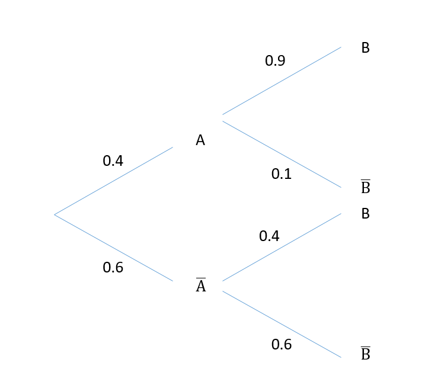

Correction du DS 2¶
Exercice 1 - Statistiques¶
Enoncé:
Le tableau ci-dessous donne la répartition des salaires en France par Equivalent Temps Plein en 2019 (Source: INSEE). On prendra comme hypothèse la valeur de 1100€ et de 5000€ pour les deux valeurs extrêmes du tableau lorsque nécessaire.
Salaire |
Nombre d’EQTP (en milliers) |
|---|---|
Moins de 1200€ |
639 |
de 1200€ à 1500€ |
3 087 |
de 1500€ à 1800€ |
3 382 |
de 1800€ à 2100€ |
2 509 |
de 2100€ à 2500€ |
2 261 |
de 2500€ à 3500€ |
2 740 |
3500 et + |
2 141 |
Tracer l’histogramme associé à cette série statistique.
Calculer l’effectif, les fréquences et fréquences cumulées croissantes, en déduire la médiane, les 1er et 3ème quartiles et les 1er et neuvième décile..
Calculer la moyenne et l’écart-type.
Vous pouvez voir en annexe la courbe de répartition donnée sur le site de l’INSEE; la moyenne donnée par l’INSEE est de 2424€ . Expliquez la différence avec vos valeurs.
1.Tracé de l’histogramme de la série statistique.
df.iplot(x="Salaires",y="Nombre",kind="bar",xTitle="Salaire (€)",yTitle="Nombre d'EQTP (milliers)",title="Histogramme",theme="White")
2.Calculer l’effectif, les fréquences et fréquences cumulées croissantes, en déduire la médiane, les 1er et 3ème quartiles et les 1er et neuvième décile.
effectif = sum(df['Nombre'])
df['Fréquence']=df['Nombre']/effectif*100
df["Fréquence Cumulée"] = df["Fréquence"]
for k in range(1,len(df["Fréquence"])):
df["Fréquence Cumulée"][k]=df["Fréquence Cumulée"][k-1]+df["Fréquence"][k]
print("L'effectif est de: ", effectif)
L'effectif est de: 16759
df
| Salaires | Nombre | Fréquence | Fréquence Cumulée | |
|---|---|---|---|---|
| 0 | 1100 | 639 | 3.812877 | 3.812877 |
| 1 | 1350 | 3087 | 18.419953 | 22.232830 |
| 2 | 1650 | 3382 | 20.180202 | 42.413032 |
| 3 | 1950 | 2509 | 14.971060 | 57.384092 |
| 4 | 2300 | 2261 | 13.491258 | 70.875351 |
| 5 | 3000 | 2740 | 16.349424 | 87.224775 |
| 6 | 5000 | 2141 | 12.775225 | 100.000000 |
3.Calculer la moyenne et l’écart-type.
On utilise les formules du cours. On trouve:
from math import sqrt
rezX=0
rezX2=0
for k in range(len(df["Nombre"])):
rezX+=df["Salaires"][k]*df["Nombre"][k]
rezX2+=df["Salaires"][k]**2*df["Nombre"][k]
rezX/=effectif
rezX2/=effectif
var=rezX2-rezX**2
sigma=sqrt(var)
print("Moyenne :", rezX, "€, Moyenne des carrés :", rezX2, "€², Variance: ", var, "€², Ecart-type:",sigma, "€")
Moyenne : 2355.0629512500745 €, Moyenne des carrés : 6879462.080076377 €², Variance: 1333140.5757256662 €², Ecart-type: 1154.617068869877 €
4.Deux différences notables: tout d’abord les intervalles ne sont pas les mêmes (bien plus précis dans le cas de la courbe de l’INSEE). Ensuite, les valeurs prises comme hypothèse au début pour les intervalles bas et haut.
Exercice 2 - Probabilités conditionelles et dénombrement¶
Enoncé:
Dans cet exercice, chaque question est indépendante. Pour les questions 2 et 3, il est conseillé de faire un arbre en y ajoutant toutes les probabilités.
Combien y-a-t-il d’anagrammes du mot ÉLÈVE ?
On place 49 boules numérotées de 1 à 49 dans une urne et on en extrait 6. Combien y-a-t-il de tirages possibles ?
Soient A et B deux événements d’un espace probabilisé tels que \(p(A) = 0.4\) et \(p(B) = 0.6\) et \(p_{\bar{A}}(B) = 0.4\). Calculer \(p_A(B)\), \(p(A \cup B)\) et \(p_{\bar{B}} (A)\).
Correction:
1.La manière de compter est la même que celle du TD 1 des probabilités. Cela peut se voir également en faisant un arbre de choix: pour la première lettre il y a 5 choix, la deuxième 4, la troisième 3, etc. D’où la réponse: 5! = 120
2.On a 49 possibilités pour le premier tirage, 48 pour le deuxième, 47 pour le troisième,.. D’où: \(49 \cdot 48 \cdot 47 \cdot 46 \cdot 45 \cdot 44 \sim 10 \ milliards \)
3.On remplit l’arbre de probabilité avec ce qu’on connaît, et on en déduit le reste. Il faut d’abord commencer par \(p_A(B)\). Cela se fait en notant que l’on connaît \(p(B)\) et que \(p(B)=p_A(B)*p(A)+p_{\bar{A}}(B)*p(\bar{A})\), d’où: \(p_A(B)=\frac{p(B)-p_{\bar{A}}(B)*p(\bar{A})}{p(A)}=0.9\)

On peut ensuite calculer \(p(A \cup B)\) par la formule: \(P( A \cup B) = p(A)+p(B)-p(A \cap B)\). Ce dernier terme peut se calculer par exemple: \(P(A \cap B) =p_A(B)*p(A) = 0.36\). On obtient alors pour \(P(A \cup B) = 0.4+0.6-0.36 = 0.64\).
Pour \(p_{\bar{B}}(A)\), on utilise la définition: \(p_{\bar{B}}(A) = \frac{p(\bar{B} \cap A)}{p(\bar{B})} = 0.4*0.1/0.4 = 0.1\)
Exercice 3 - Loi Binomiale¶
Enoncé:
A un aéroport, des statistiques montrent que que 2.2% des gens font sonner le portique de sécurité. Un groupe de 80 personnes arrive pour franchir le portique. Soit \(X\) la variable aléatoire associé aux nombres de sonnerie du portique.
Donner la loi de X, sous la forme \(X \sim ...\)
Calculer l’espérance de \(X\) et interpréter le résultat.
Déterminer la probabilité qu’au moins une personne fasse sonner le portique.
On suppose qu’il n’y a qu’un seul portique, et que chaque passager doit attendre que le premier soit passé pour passer à son tour. Lorsque le portique sonne, une personne met 5 minutes à passer. Lorsqu’il ne sonne pas, une personne met 10 secondes à passer. Déterminer la probabilité que le groupe mette moins de 25 minutes à passer.
Correction:
On modélise la situation avec une loi binomiale: en effet, la façon la plus logique d’aborder l’exercice est de dire que chaque personne a une probabilité de 2.2% de faire sonner le portique. On a alors que X suit une loi binomiale, \(X \sim \mathcal{B}(80,0.022)\).
\(E(X)=80*0.022=1.76\). On peut donc dire qu’en moyenne, entre 1 et 2 personnes font sonner le portique.
On cherche \(P(X \geq 1)\). On utilise la complémentarité à 1: \(P(X \geq 1) = 1- P(X=0) = 1- \begin{pmatrix} 80 \\ 0 \end{pmatrix} 0.022^0 (1-0.022)^80 = 0.831\)
Soit T la variable aléatoire du temps passé en minutes pour le groupe. On a alors \(T=5*X+(80-X)*10/60\). L’événement \((T \leq 25)\) peut s’écrire: \((5*X+(80-X)*10/60 \leq 25)=(X*(5-10/60) \leq 25-80*10/60) = (29/6*X \leq 142/6) = (X \leq 142/29) =(X\leq 4.89) = (X \leq 4)\)
On calcule alors \(P(X \leq 4) = \sum_{i=0}^4 P(X=i) = (1-0.022)^{80}+80*0.022*(1-0.022)^{79}+\frac{80*79}{2}*0.022²*(1-0.022)^{78}+\frac{80*79*78}{6}*0.022^3*(1-0.022)^{77}+\frac{80*79*78*77}{24}0.022^4*(1-0.022)^{76}=0.968\)
On pouvait également approximer par une loi de poisson, les calculs étant plus simples. Cela donnait, avec \(\lambda = 80*0.022\): \(P(X \leq 4) = e^{-\lambda}*(\sum_{i=0}^4 \frac{\lambda^i}{i!} = 0.966\)
(1-0.022)**80+80*0.022*(1-0.022)**79+80*79/2*0.022**2*(1-0.022)**78+80*79*78/6*0.022**3*(1-0.022)**77+80*79*78*77/24*0.022**4*(1-0.022)**76
0.9681212024139246
from math import exp,factorial
rez=0
l=80*0.022
for i in range(5):
rez+=pow(l,i)/factorial(i)
rez*=exp(-l)
print(rez)
0.9664149235240662
Exercice 4 - Loi Normale¶
Enoncé:
Un magasin vend des sacs de ciment. D’après une étude statistique, on sait qu’on peut modéliser le nombre de sacs de ciments vendus par une variable aléatoire \(X\) suivant une loi normale de moyenne \(\mu = 750\) d’écart-type \(\sigma=25\).
Calculer \(P(720 \leq X \leq 770).\)
Le responsable du magasin veut connaître le nombre \(n\) de sacs de ciment qu’il doit avoir en stock en début de mois, pour que la probabilité d’être en rupture de stock en cours de mois soit inférieure à 0,05. On ne réalimente pas le stock en cours de mois. Déterminer la plus petite valeur de l’entier n remplissant cette condition.
On donne les valeurs suivantes issues du tableau de la loi normale centrée réduite; soit \(Y \sim \mathcal{N}(0,1)\), alors \(P(Y \leq 0.6) = 0.7257\), \(P(Y \leq 0.8) = 0.7881\), \(P(Y \leq 1) = 0.8413\), \(P(Y \leq 1.2) = 0.8849\), \(P(Y \leq 1.53) = 0.9370\), \(P(Y \leq 1.645) = 0.9500\), \(P(Y \leq 2) = 0.9772\).
Correction:
On commence par centrer et réduire. Soit \(Y=\frac{X-\mu}{\sigma}\), alors \(Y \sim \mathcal{N}(0,1)\). Or: \(P(720 \leq X \leq 770) = P(\frac{720-\mu}{\sigma} \leq Y \leq \frac{770-\mu}{\sigma}) = P(-1.2 \leq Y \leq 0.8)\)
on utilise ensuite la courbe et les propriétés de symétrie pour répondre. On voit que l’on a: \(P(-1.2 \leq Y \leq 0.8) = P(Y \leq 0.8)-P(Y\leq -1.2)\). Or \(P(Y \leq -1.2) = P(Y \geq 1.2) = 1-P(Y \leq 1.2)\). Donc, en réinjectant, on obtient:
\(P(-1.2 \leq Y \leq 0.8) = P(Y \leq 0.8)+P(Y \leq 1.2) -1 = 0.673\)
On commence par traduire en math. On comprend que l’on cherche \(n\) tel que: \(P(X>n) \leq 0.05\). On commence par centrer et réduire. \(P(X>n)=P(Y> \frac{n-\mu}{\sigma} )\). On note \(x=\frac{n-\mu}{\sigma}\). \(P(Y>x) \leq 0.05 \leftrightarrow P(Y \leq x) \geq 0.95 \). La limite inférieure pour x est donc 1.645, car en effet si x<1.645 alors \(P(Y \leq x) < 0.95\) (ce qui traduit que la fonction de répartition est une fonction croissante de x). Par conséquent on a \(x \geq 1.645 \leftrightarrow \frac{n-\mu}{\sigma} \leq 1.645 \leftrightarrow n \geq \mu +\sigma * 1.645\). D’où: \(n \geq 791.125\). Comme n ne prend que des valeurs entières, on en déduit \(n=792\).
Bonus¶
Enoncé:
Sachant que la probabilité qu’une personne se fasse un lumbago en ramassant un sac de ciment est de 1%, que le nombre de sacs achetés par une personne suit une loi de poisson de paramètre \(\lambda=3\), et que le temps d’attente chez l’osthéopathe suit une loi uniforme entre 0 et 3h, déterminez la probabilité qu’une personne achetant du ciment attende 1h chez l’osthéopathe.
Correction:
Pour cet exercice, il faut raisonner en probabilités conditionelles: on fixe k le nombre de sacs de ciments achetés; il y a pour cela une probabilité \(p(k)= e^{-3}*\frac{3^k}{k!}\).
Sachant que la personne a acheté k sacs de ciments, on peut dire que le nombre de fois où la personne se fait mal au dos suit, au choix:
une loi binomiale de paramètre \(\mathcal{B}(k,1/100)\).
une loi géométrique s’arrêtant à k, ce qui serait même plus exact, mais pas dans le cadre de ce cours.
Soit alors \(X \sim \mathcal{B}(k,1/100)\), on cherche \(P( X \geq 1) = 1-P(X=0)=1-(\frac{99}{100})^k\)
Il faut maintenant faire la somme sur les k pour connaître la probabilité que la personne aille chez l’osthéopathe. On doit donc calculer \(\sum_{k=1}^{+\infty} p(k)*(1-(99/100)^k)=\sum_{k=1}^{+\infty} p(k) -e^{-3}*\sum_{k=1}^{+\infty} (3*99/100)^k = 1-p(0)-e^{-3}*(e^{3*99/100}-1)=1-e^{-3}*e^{3*99/100}=1-e^{-1/100}=0.00995\).
Maintenant que l’on connaît la probabilité d’aller chez l’osthéopathe, on peut s’intéresser à la loi uniforme. Notons au passage l’erreur d’énoncé: une personne n’attendra jamais 1h exactement, c’est un intervalle qui doit être donné; par conséquent une réponse immédiate à la question aurait pu être 0. Supposons que l’on cherche la probabilité d’attendre moins de 1h. Cela correspond à une probabilité de \(1/3\). On obtient donc pour la probabilité d’aller chez l’osthéopathe et d’attendre moins d’une heure: \(0.00995*1/3 = 0.0033= 0.3\%\)